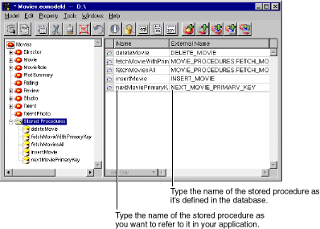
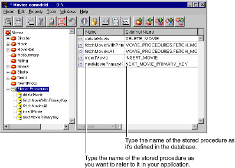
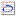

Add Stored Procedure.
Add Stored Procedure.

Figure 38. Adding a Stored Procedure
 Table of Contents
Table of Contents  Previous Section
Previous Section
To add a stored procedure:
Add Stored Procedure.

Figure 38. Adding a Stored Procedure
Note: The Advanced Attribute Inspector isn't applicable to stored procedure arguments. As a result, you can't access it while editing a stored procedure argument.
To define and display the attributes of a stored procedure:
Alternatively, you can double-click the  icon to the left of a stored procedure in the Model Editor's stored procedure table.
 Add Argument.
Add Argument.
Minimally, you must provide values for the Name, Column, Direction, External Type, and Value Class characteristics.
The following table describes the characteristics you can set for a stored procedure argument.
For example, to add arguments for the Sybase stored procedure defined as:
create proc movie_by_date (@begin datetime, @end datetime) as begin select CATEGORY, DATE_RELEASED, LANGUAGE, MOVIE_ID, RATING, REVENUE, STUDIO_ID, TITLE from MOVIES where DATE_RELEASED > @begin and DATE_RELEASED < @end endyou would add an argument for @begin and @end with column names "begin" and "end", respectively.
Tip: If you're using Oracle, you can define a stored procedure to represent a function. Add an argument named "returnValue" and use the EOAdaptorChannel method returnValuesForLastStoredProcedureInvocation to get the function's result.
If the Framework invokes your stored procedure automatically, the argument names of a stored procedure must match the name of a corresponding EOAttribute object. For example, if you want to invoke a stored procedure whenever the Framework fetches a Movie object by its primary key, the stored procedure's argument names must correspond to the primary key attributes of the Movie entity. The following section discusses this requirement more thoroughly.
Table of Contents  Next Section
Next Section